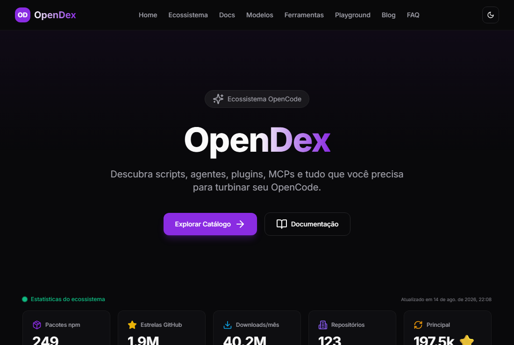

OpenDex
R$ 0
123 repositórios, 249 pacotes, dados abertos e o coletor.
- site no ar com 123 repos e 249 pacotes indexados
- dados em aberto
- código do coletor
Tudo indexado e atualizando junto com o ecossistema.
Catalogo e documentacao do ecossistema OpenCode: 123 repositorios reais, 249 pacotes npm, feed e ranking.
No ar em https://nz12two.github.io/opendex/. 380 páginas em build, 0 erros.

npm install && astro build && node scripts/generate-og.mjssaída: dist/ (~36s, 380 páginas)
As OG images saem de satori + @resvg/resvg-js, 1200x630, com as fontes em scripts/fonts/.
git push origin mainsaída: GitHub Actions publica em github.io/opendex
Workflow em .github/workflows/deploy.yml, dispara no push para main.
Plugins, scripts e MCPs derivam dos dados reais do npm (249 pacotes). Repositórios vêm de um coletor real do GitHub (123).
Quando não há fonte, a página mostra empty state honesto em vez de inventar item. Essa foi a regra depois da auditoria que removeu 12 entradas fake.
News é reconstruída de 9 releases reais do GitHub + 30 posts do Dev.to.
O layout de catálogo, o coletor e o gerador de OG são reusados por este catálogo de produtos.
O que está no GitHub continua gratuito, com a mesma licença e sem conta. A versão paga não é o código trancado — é o mesmo código calibrado para o seu caso, com alguém olhando junto.
R$ 0
123 repositórios, 249 pacotes, dados abertos e o coletor.
Tudo indexado e atualizando junto com o ecossistema.
R$ 49/mês
O mesmo catálogo, com a sua marca e no seu domínio.
Espelho do catálogo mantendo a sua marca, alerta quando o ecossistema ganha plugin relevante.
Quer ver o material do nível pago?
Acesso local, sem senha real: ainda não há servidor. Serve para testar a porta.
Acesso liberado nesta máquina.
Ir para o códigoPreço é sugestão, e nada aqui está cobrando ninguém ainda. Preferi deixar o valor visível antes de a cobrança funcionar do que montar um checkout que não entrega.